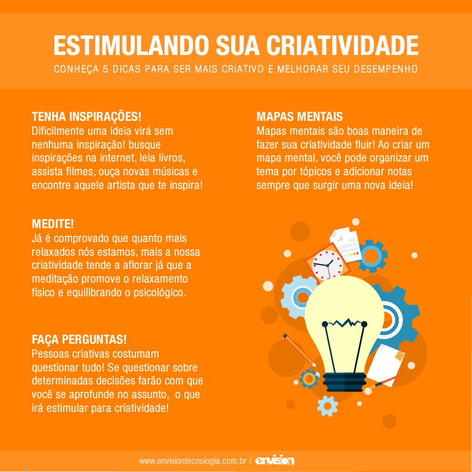
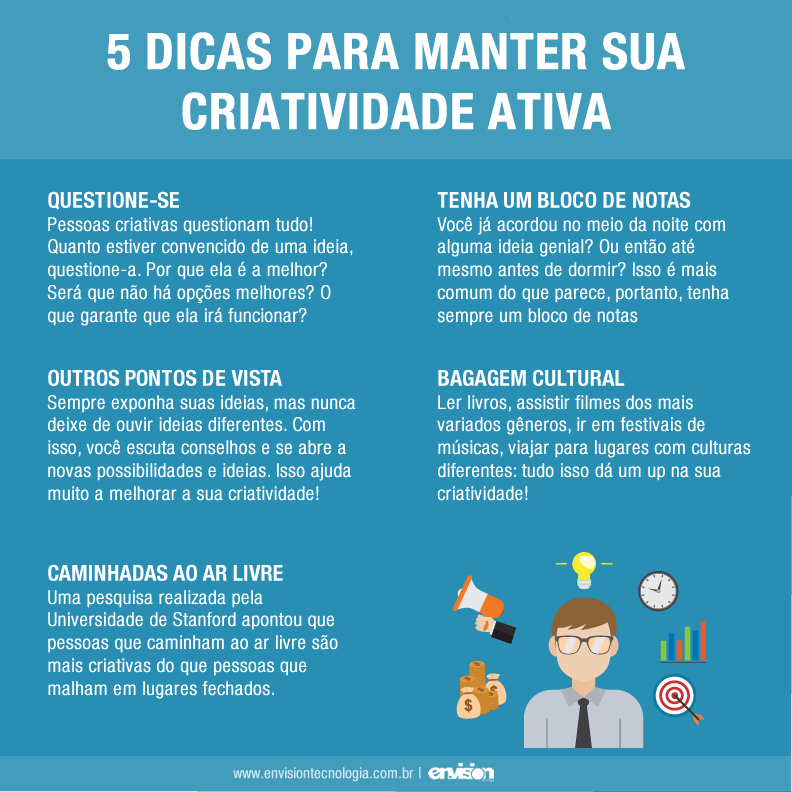

Um espaço para pessoas criativas
A criatividade é uma das habilidades mais bem valorizadas no mercado de trabalho, já que profissionais criativos apresentam soluções inovadoras para o negócio. Se você deseja avançar com a sua carreira, é interessante buscar formas de desenvolver o pensamento criativo para se destacar profissionalmente.
Engana-se quem pensa que a criatividade é uma habilidade exclusiva de algumas pessoas. A verdade é que qualquer um pode trabalhar para desenvolver essa capacidade. Adicionando pequenos hábitos na rotina é possível ser uma pessoa mais criativa.
Acompanhe algumas dicas de como estimular sua criatividade

E tambem de como mante-la, pois também é importante

Para mais informaçoes acesse
AQUI